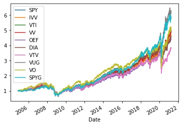
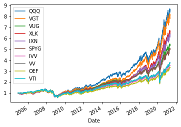
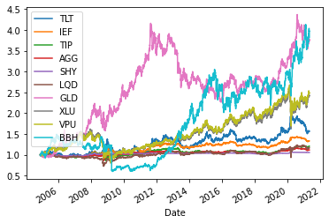
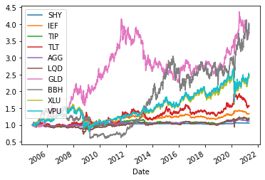
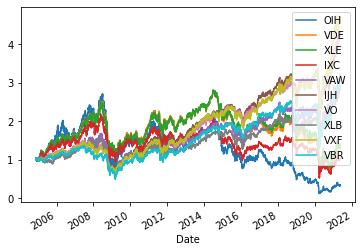
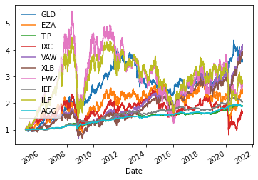

Relative tickers¶
[1]:
# If you would like to refresh your data, please execute the bellow codes.
import pandas as pd
import numpy as np
from datetime import datetime
from tqdm import tqdm
from mypo import Loader
DOWNLOAD = False
if DOWNLOAD:
tickers = pd.read_csv("/app/docs/tutorial/tickers.csv")
loader = Loader()
for row in tqdm(tickers.to_dict('record')):
loader.get(row['Ticker'], expense_ratio=row['ExpenseRatio'] * 0.01)
loader.save('/app/docs/tutorial/all.bin')
[2]:
loader = Loader.load('/app/docs/tutorial/all.bin')
loader = loader.since(datetime(2005, 1, 1))
market = loader.get_market()
[3]:
relatives = market.get_relative('SPY')
subset = market.filter(relatives.index)
subset.get_normalized_prices().plot()
summary = subset.get_summary()
pd.concat([relatives, summary], axis=1)
/app/mypo/market.py:338: SettingWithCopyWarning:
A value is trying to be set on a copy of a slice from a DataFrame.
Try using .loc[row_indexer,col_indexer] = value instead
See the caveats in the documentation: https://pandas.pydata.org/pandas-docs/stable/user_guide/indexing.html#returning-a-view-versus-a-copy
df[c] = df[c] / df[c][0]
[3]:
| correlation | daily return | variance | sharp ratio | expense ratio | |
|---|---|---|---|---|---|
| SPY | 1.000000 | 0.000450 | 0.000151 | 2.982542 | 0.0009 |
| IVV | 0.993818 | 0.000451 | 0.000149 | 3.025591 | 0.0004 |
| VTI | 0.992731 | 0.000467 | 0.000153 | 3.046810 | 0.0003 |
| VV | 0.987673 | 0.000465 | 0.000150 | 3.090791 | 0.0004 |
| OEF | 0.984128 | 0.000437 | 0.000144 | 3.026941 | 0.0020 |
| DIA | 0.972807 | 0.000442 | 0.000143 | 3.100646 | 0.0016 |
| VTV | 0.968890 | 0.000408 | 0.000161 | 2.541218 | 0.0004 |
| VUG | 0.966914 | 0.000524 | 0.000153 | 3.428529 | 0.0004 |
| VO | 0.962396 | 0.000494 | 0.000185 | 2.671346 | 0.0004 |
| SPYG | 0.959672 | 0.000507 | 0.000147 | 3.447361 | 0.0004 |

[4]:
relatives = market.get_relative('QQQ')
subset = market.filter(relatives.index)
subset.get_normalized_prices().plot()
summary = subset.get_summary()
pd.concat([relatives, summary], axis=1)
/app/mypo/market.py:338: SettingWithCopyWarning:
A value is trying to be set on a copy of a slice from a DataFrame.
Try using .loc[row_indexer,col_indexer] = value instead
See the caveats in the documentation: https://pandas.pydata.org/pandas-docs/stable/user_guide/indexing.html#returning-a-view-versus-a-copy
df[c] = df[c] / df[c][0]
[4]:
| correlation | daily return | variance | sharp ratio | expense ratio | |
|---|---|---|---|---|---|
| QQQ | 1.000000 | 0.000637 | 0.000180 | 3.533849 | 0.0020 |
| VGT | 0.972896 | 0.000632 | 0.000192 | 3.293231 | 0.0010 |
| VUG | 0.960488 | 0.000524 | 0.000153 | 3.428529 | 0.0004 |
| XLK | 0.960147 | 0.000602 | 0.000186 | 3.243075 | 0.0013 |
| IXN | 0.951295 | 0.000569 | 0.000190 | 2.994380 | 0.0046 |
| SPYG | 0.948292 | 0.000507 | 0.000147 | 3.447361 | 0.0004 |
| VV | 0.919241 | 0.000465 | 0.000150 | 3.090791 | 0.0004 |
| IVV | 0.919098 | 0.000451 | 0.000149 | 3.025591 | 0.0004 |
| OEF | 0.918476 | 0.000437 | 0.000144 | 3.026941 | 0.0020 |
| VTI | 0.918417 | 0.000467 | 0.000153 | 3.046810 | 0.0003 |

[5]:
relatives = market.get_relative('TLT')
subset = market.filter(relatives.index)
subset.get_normalized_prices().plot()
summary = subset.get_summary()
pd.concat([relatives, summary], axis=1)
/app/mypo/market.py:338: SettingWithCopyWarning:
A value is trying to be set on a copy of a slice from a DataFrame.
Try using .loc[row_indexer,col_indexer] = value instead
See the caveats in the documentation: https://pandas.pydata.org/pandas-docs/stable/user_guide/indexing.html#returning-a-view-versus-a-copy
df[c] = df[c] / df[c][0]
[5]:
| correlation | daily return | variance | sharp ratio | expense ratio | |
|---|---|---|---|---|---|
| TLT | 1.000000 | 0.000275 | 8.005042e-05 | 3.436350 | 0.0015 |
| IEF | 0.911983 | 0.000182 | 1.654876e-05 | 11.000269 | 0.0015 |
| TIP | 0.692784 | 0.000163 | 1.505960e-05 | 10.827642 | 0.0019 |
| AGG | 0.628771 | 0.000158 | 9.637003e-06 | 16.443447 | 0.0005 |
| SHY | 0.556413 | 0.000080 | 6.850880e-07 | 117.411555 | 0.0015 |
| LQD | 0.439281 | 0.000214 | 2.834508e-05 | 7.551161 | 0.0014 |
| GLD | 0.136924 | 0.000380 | 1.316154e-04 | 2.889224 | 0.0040 |
| XLU | -0.186516 | 0.000421 | 1.437454e-04 | 2.926052 | 0.0013 |
| VPU | -0.209599 | 0.000424 | 1.421851e-04 | 2.982212 | 0.0010 |
| RWR | -0.240999 | 0.000476 | 4.081610e-04 | 1.165556 | 0.0025 |

[6]:
relatives = market.get_relative('SHY')
subset = market.filter(relatives.index)
subset.get_normalized_prices().plot()
summary = subset.get_summary()
pd.concat([relatives, summary], axis=1)
/app/mypo/market.py:338: SettingWithCopyWarning:
A value is trying to be set on a copy of a slice from a DataFrame.
Try using .loc[row_indexer,col_indexer] = value instead
See the caveats in the documentation: https://pandas.pydata.org/pandas-docs/stable/user_guide/indexing.html#returning-a-view-versus-a-copy
df[c] = df[c] / df[c][0]
[6]:
| correlation | daily return | variance | sharp ratio | expense ratio | |
|---|---|---|---|---|---|
| SHY | 1.000000 | 0.000080 | 6.850880e-07 | 117.411555 | 0.0015 |
| IEF | 0.729109 | 0.000182 | 1.654876e-05 | 11.000269 | 0.0015 |
| TIP | 0.558922 | 0.000163 | 1.505960e-05 | 10.827642 | 0.0019 |
| TLT | 0.556413 | 0.000275 | 8.005042e-05 | 3.436350 | 0.0015 |
| AGG | 0.478336 | 0.000158 | 9.637003e-06 | 16.443447 | 0.0005 |
| LQD | 0.260461 | 0.000214 | 2.834508e-05 | 7.551161 | 0.0014 |
| GLD | 0.158794 | 0.000380 | 1.316154e-04 | 2.889224 | 0.0040 |
| XLU | -0.162849 | 0.000421 | 1.437454e-04 | 2.926052 | 0.0013 |
| VPU | -0.182832 | 0.000424 | 1.421851e-04 | 2.982212 | 0.0010 |
| BBH | -0.194779 | 0.000651 | 2.007510e-04 | 3.243386 | 0.0035 |

[7]:
relatives = market.get_relative('OIH')
subset = market.filter(relatives.index)
subset.get_normalized_prices().plot()
summary = subset.get_summary()
pd.concat([relatives, summary], axis=1)
/app/mypo/market.py:338: SettingWithCopyWarning:
A value is trying to be set on a copy of a slice from a DataFrame.
Try using .loc[row_indexer,col_indexer] = value instead
See the caveats in the documentation: https://pandas.pydata.org/pandas-docs/stable/user_guide/indexing.html#returning-a-view-versus-a-copy
df[c] = df[c] / df[c][0]
[7]:
| correlation | daily return | variance | sharp ratio | expense ratio | |
|---|---|---|---|---|---|
| OIH | 1.000000 | 0.000150 | 0.000638 | 0.235115 | 0.0035 |
| VDE | 0.933035 | 0.000349 | 0.000376 | 0.928096 | 0.0010 |
| XLE | 0.921508 | 0.000374 | 0.000377 | 0.990545 | 0.0013 |
| IXC | 0.899857 | 0.000283 | 0.000318 | 0.889195 | 0.0046 |
| VAW | 0.747929 | 0.000473 | 0.000247 | 1.912074 | 0.0010 |
| IJH | 0.730195 | 0.000501 | 0.000196 | 2.554967 | 0.0007 |
| XLB | 0.723650 | 0.000452 | 0.000236 | 1.916580 | 0.0013 |
| VO | 0.722793 | 0.000494 | 0.000185 | 2.671346 | 0.0004 |
| VXF | 0.710835 | 0.000527 | 0.000205 | 2.573624 | 0.0006 |
| VBR | 0.708965 | 0.000467 | 0.000229 | 2.037969 | 0.0007 |

[8]:
relatives = market.get_relative('GLD')
subset = market.filter(relatives.index)
subset.get_normalized_prices().plot()
summary = subset.get_summary()
pd.concat([relatives, summary], axis=1)
/app/mypo/market.py:338: SettingWithCopyWarning:
A value is trying to be set on a copy of a slice from a DataFrame.
Try using .loc[row_indexer,col_indexer] = value instead
See the caveats in the documentation: https://pandas.pydata.org/pandas-docs/stable/user_guide/indexing.html#returning-a-view-versus-a-copy
df[c] = df[c] / df[c][0]
[8]:
| correlation | daily return | variance | sharp ratio | expense ratio | |
|---|---|---|---|---|---|
| GLD | 1.000000 | 0.000380 | 0.000132 | 2.889224 | 0.0040 |
| EZA | 0.242308 | 0.000482 | 0.000509 | 0.948013 | 0.0059 |
| TIP | 0.239488 | 0.000163 | 0.000015 | 10.827642 | 0.0019 |
| IXC | 0.184039 | 0.000283 | 0.000318 | 0.889195 | 0.0046 |
| VAW | 0.183364 | 0.000473 | 0.000247 | 1.912074 | 0.0010 |
| XLB | 0.182071 | 0.000452 | 0.000236 | 1.916580 | 0.0013 |
| EWZ | 0.179145 | 0.000546 | 0.000617 | 0.884256 | 0.0059 |
| IEF | 0.170396 | 0.000182 | 0.000017 | 11.000269 | 0.0015 |
| ILF | 0.170134 | 0.000486 | 0.000468 | 1.037707 | 0.0048 |
| AGG | 0.167996 | 0.000158 | 0.000010 | 16.443447 | 0.0005 |
